Examine the Exercise-Cycle Relationship such as the pattern of calories and activity level across menstrual phases and whether it associated with hormone or stress changes (scatterplot), and multivariable linear regression that includes stress score, sleep time, exercise time, exercise activities, and menstrual phases.
Datasets:
# Load libraries
library(tidyverse)# Read data
exercise = read_csv("./data/exercise.csv")
hormones = read_csv("./data/hormones_and_selfreport.csv")
# Clean and un-duplicate exercise data
exercise_clean = exercise %>%
distinct() %>%
select(id, study_interval, start_day_in_study,
activityname, calories, duration, activeduration,
averageheartrate, steps, elevationgain)
# Aggregate to daily level
exercise_daily = exercise_clean %>%
group_by(id, study_interval, start_day_in_study) %>%
summarise(
total_calories = sum(calories, na.rm = TRUE),
total_duration_min = sum(duration, na.rm = TRUE) / 60000,
total_active_min = sum(activeduration, na.rm = TRUE) / 60000,
total_steps = sum(steps, na.rm = TRUE),
avg_heartrate = mean(averageheartrate, na.rm = TRUE),
max_heartrate = max(averageheartrate, na.rm = TRUE),
total_elevation = sum(elevationgain, na.rm = TRUE),
n_sessions = n(),
activity_types = paste(unique(activityname), collapse = ", "),
.groups = "drop"
) %>%
rename(day_in_study = start_day_in_study)
# Convert Likert scales to numeric
likert_to_num <- c("Very Low/Little" = 1, "Low" = 2, "Moderate" = 3,
"High" = 4, "Very High" = 5)
hormones_clean = hormones %>%
mutate(
stress_num = recode(stress, !!!likert_to_num),
fatigue_num = recode(fatigue, !!!likert_to_num),
cramps_num = recode(cramps, !!!likert_to_num),
sleepissue_num = recode(sleepissue, !!!likert_to_num),
exerciselevel_num = recode(exerciselevel, !!!likert_to_num),
appetite_num = recode(appetite, !!!likert_to_num),
bloating_num = recode(bloating, !!!likert_to_num),
moodswing_num = recode(moodswing, !!!likert_to_num),
# Order phase factor for proper plotting
phase = factor(phase, levels = c("Menstrual", "Follicular", "Fertility", "Luteal"))
)
# Merge datasets
merged_data = hormones_clean %>%
left_join(exercise_daily, by = c("id", "study_interval", "day_in_study")) %>%
mutate(
total_calories = replace_na(total_calories, 0),
total_duration_min = replace_na(total_duration_min, 0),
total_active_min = replace_na(total_active_min, 0),
total_steps = replace_na(total_steps, 0),
n_sessions = replace_na(n_sessions, 0),
total_elevation = replace_na(total_elevation, 0),
# Binary: did they exercise today?
exercised_today = ifelse(n_sessions > 0, "Yes", "No")
) %>%
filter(!is.na(phase)) # maybe filter out phase that is NA?# Boxplot: Exercise duration by phase
ggplot(merged_data %>% filter(total_duration_min > 0),
aes(x = phase, y = total_duration_min, fill = phase)) +
geom_boxplot(alpha = 0.7) +
geom_jitter(alpha = 0.1, width = 0.2) +
facet_wrap(~study_interval) +
labs(title = "Exercise Duration Across Menstrual Phases",
x = "Menstrual Phase",
y = "Total Exercise Duration (minutes)") +
theme_minimal() +
theme(legend.position = "none")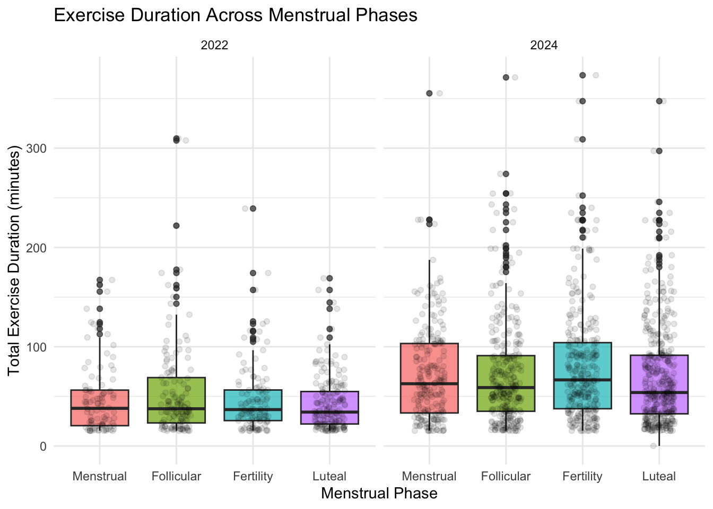
# Boxplot: Calories burned by phase (faceted by study interval)
ggplot(merged_data %>% filter(total_calories > 0),
aes(x = phase, y = total_calories, fill = phase)) +
geom_boxplot(alpha = 0.7) +
facet_wrap(~study_interval) +
labs(title = "Exercise Calories by Phase",
x = "Menstrual Phase",
y = "Calories Burned") +
theme_minimal() +
theme(legend.position = "none")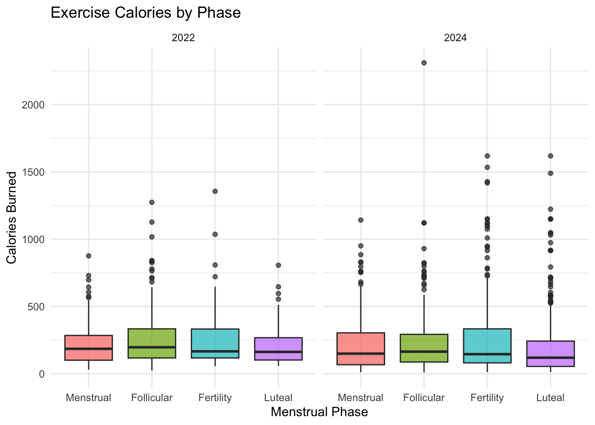
# Average heart rate during exercise by phase
ggplot(merged_data %>% filter(!is.na(avg_heartrate)),
aes(x = phase, y = avg_heartrate, fill = phase)) +
geom_boxplot(width = 0.2, alpha = 0.8) +
facet_wrap(~study_interval) +
labs(title = "Exercise Intensity (Heart Rate) by Menstrual Phase",
x = "Menstrual Phase",
y = "Average Heart Rate (bpm)") +
theme_minimal() +
theme(legend.position = "none")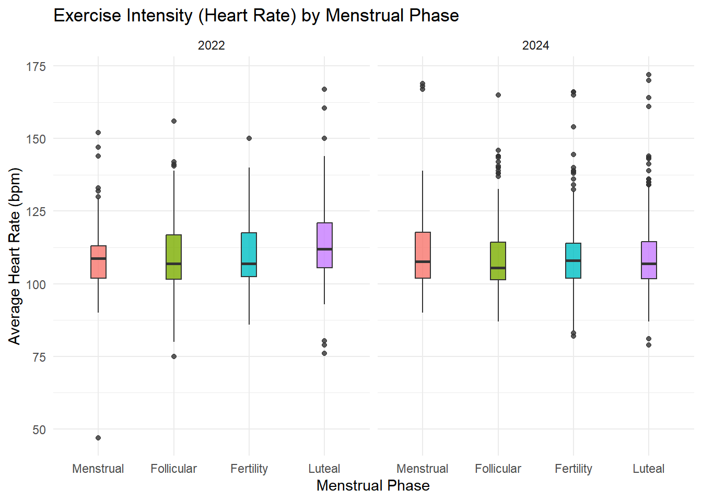
# Calculate total proportion of days where exercise sessions > 0
exercise_likelihood = merged_data %>%
group_by(phase, study_interval) %>%
summarise(
total_days = n(), # total no. of observations
exercise_days = sum(n_sessions > 0), # total no. of sessions logged on that day
proportion = exercise_days / total_days,
.groups = "drop"
)
ggplot(exercise_likelihood, aes(x = phase, y = proportion, fill = phase)) +
geom_col(alpha = 0.8) +
geom_text(aes(label = scales::percent(proportion, accuracy = 0.1)),
vjust = -0.5) +
facet_wrap(~study_interval) +
labs(title = "Likelihood of Exercising by Menstrual Phase",
x = "Menstrual Phase",
y = "Proportion of Days with Exercise") +
scale_y_continuous(labels = scales::percent, limits = c(0, 0.7)) +
theme_minimal() +
theme(legend.position = "none")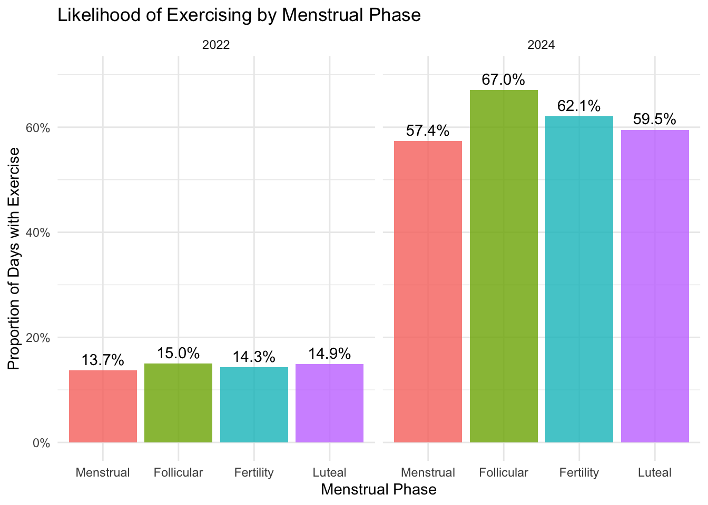
# NOT TO INCLUDE, DOES NOT REALLY OFFER ANY INSIGHT
# Estrogen vs exercise duration
ggplot(merged_data %>% filter(total_duration_min > 0),
aes(x = estrogen, y = total_duration_min, color = phase)) +
geom_point(alpha = 0.5) +
geom_smooth(method = "lm", se = FALSE, linetype = "dashed") +
labs(title = "Estrogen Level vs Exercise Duration",
x = "Estrogen (ng/mL)",
y = "Exercise Duration (min)",
color = "Phase") +
theme_minimal()## `geom_smooth()` using formula = 'y ~ x'## Warning: Removed 92 rows containing non-finite outside the scale range
## (`stat_smooth()`).## Warning: Removed 92 rows containing missing values or values outside the scale
## range (`geom_point()`).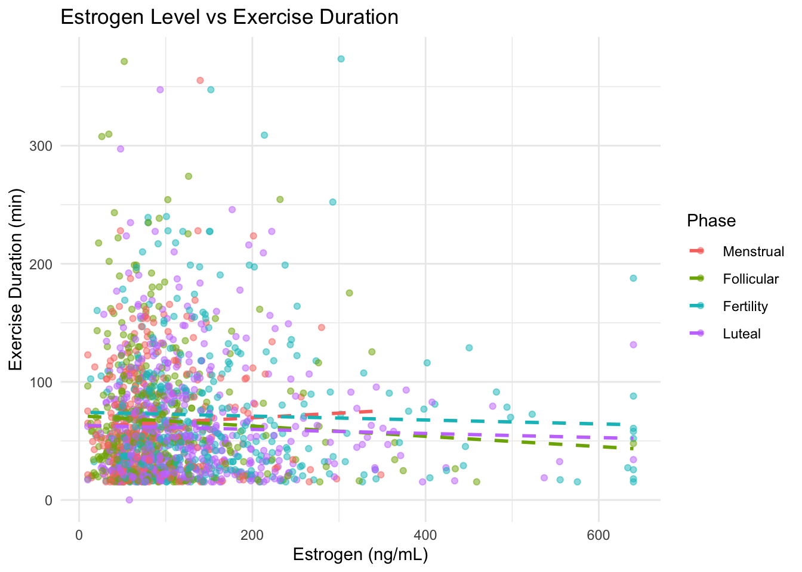
# LH (luteinizing hormone) vs exercise
ggplot(merged_data %>% filter(total_duration_min > 0),
aes(x = lh, y = total_duration_min, color = phase)) +
geom_point(alpha = 0.5) +
labs(title = "Luteinizing Hormone vs Exercise Duration",
subtitle = "LH goes down during ovulation/fertility",
x = "LH (mIU/mL)",
y = "Exercise Duration (min)",
color = "Phase") +
theme_minimal()## Warning: Removed 91 rows containing missing values or values outside the scale
## range (`geom_point()`).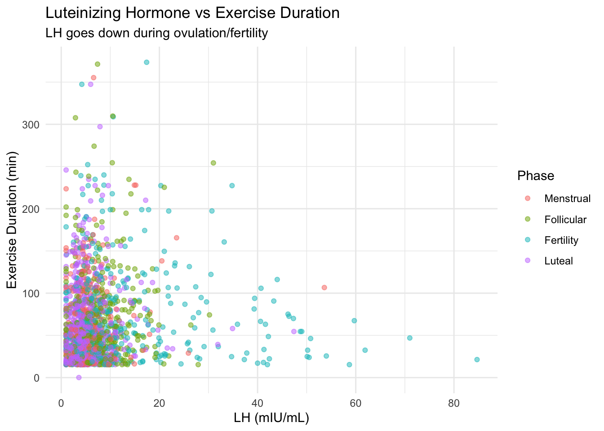
# Progesterone (PdG) vs exercise duration
ggplot(merged_data %>% filter(total_duration_min > 0 & !is.na(pdg)),
aes(x = pdg, y = total_duration_min, color = phase)) +
geom_point(alpha = 0.5) +
labs(title = "Progesterone (PdG) vs Exercise Duration",
subtitle = "PdG goes up in luteal phase",
x = "PdG (mcg/mL)",
y = "Exercise Duration (min)",
color = "Phase") +
theme_minimal()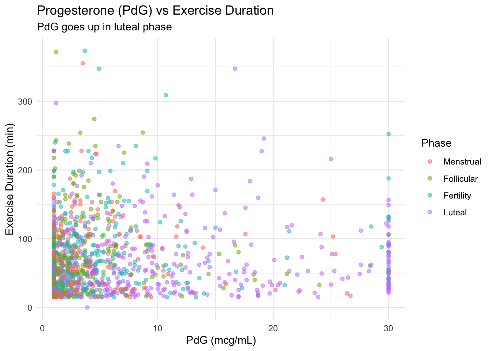
# Stress vs Exercise
ggplot(merged_data %>% filter(!is.na(stress_num) & total_duration_min > 0),
aes(x = factor(stress_num), y = total_duration_min, fill = phase)) +
geom_boxplot(alpha = 0.7) +
labs(title = "Self-Reported Stress vs Exercise Duration",
x = "Stress Level (1=Very Low, 5=Very High)",
y = "Exercise Duration (min)",
fill = "Phase") +
theme_minimal()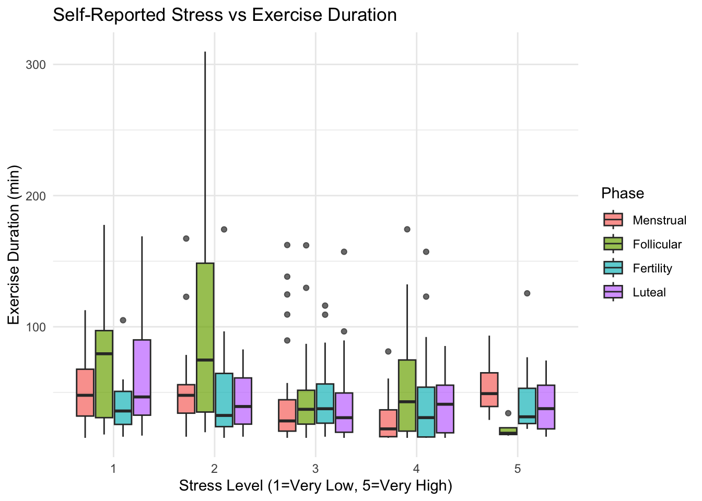
# Fatigue vs. exercise
ggplot(merged_data %>% filter(!is.na(fatigue_num) & total_duration_min > 0),
aes(x = factor(fatigue_num), y = total_duration_min)) +
geom_boxplot(alpha = 0.7, fill = "steelblue") +
labs(title = "Fatigue Level vs Exercise Duration",
x = "Fatigue (1=Very Low, 5=Very High)",
y = "Exercise Duration (min)") +
theme_minimal()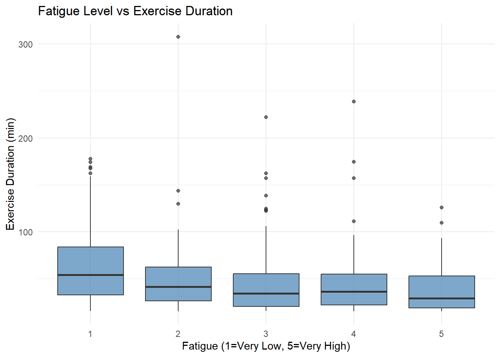
# Cramps vs Exercise (tried to observe by menstrual phases, too little data, plots don't generate nicely)
ggplot(merged_data %>% filter(!is.na(cramps_num), total_duration_min > 0),
aes(x = factor(cramps_num), y = total_duration_min)) +
geom_boxplot(fill = "steelblue", alpha = 0.7) +
# geom_jitter(alpha = 0.2, width = 0.2) + # Add points to see data
labs(title = "Cramp Severity vs Exercise Duration",
x = "Cramps (1=Very Low, 5=Very High)",
y = "Exercise Duration (min)") +
theme_minimal()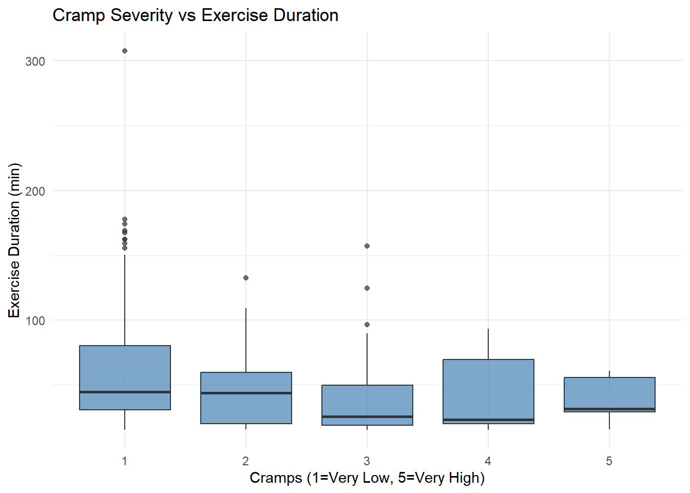 ### Comparing self-reported exercise results to objective measures
# Don't really see any relationship. Same average durations reported across all groups
# No alignment between exercise intensity and actual exercise duration
ggplot(merged_data %>% filter(!is.na(exerciselevel_num), total_duration_min > 0),
aes(x = exerciselevel_num, y = total_duration_min)) +
geom_jitter(alpha = 0.3, width = 0.2, height = 0, color = "steelblue") +
geom_smooth(method = "lm", se = TRUE, color = "darkblue") +
labs(title = "Self-Reported vs Objective Exercise Level",
subtitle = "How well does perception match Fitbit data?",
x = "Self-Reported Exercise Level (1=Very Low, 5=Very High)",
y = "Fitbit-Measured Duration (min)") +
theme_minimal()## `geom_smooth()` using formula = 'y ~ x'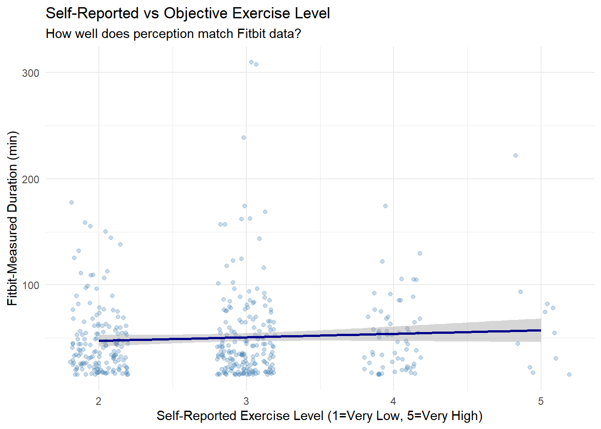
# Mean exercise by phase for each participant
individual_patterns = merged_data %>%
group_by(id, phase) %>%
summarise(mean_duration = mean(total_duration_min, na.rm = TRUE),
.groups = "drop")
ggplot(individual_patterns, aes(x = phase, y = mean_duration, group = id)) +
geom_line(alpha = 0.3) +
geom_point(alpha = 0.3) +
stat_summary(aes(group = 1), fun = mean, geom = "line",
color = "red", size = 1.5) +
stat_summary(aes(group = 1), fun = mean, geom = "point",
color = "red", size = 3) +
labs(title = "Individual Exercise Patterns Across Phases",
subtitle = "Red line = group mean",
x = "Menstrual Phase",
y = "Mean Exercise Duration (min)") +
theme_minimal()## Warning: Using `size` aesthetic for lines was deprecated in ggplot2 3.4.0.
## ℹ Please use `linewidth` instead.
## This warning is displayed once every 8 hours.
## Call `lifecycle::last_lifecycle_warnings()` to see where this warning was generated.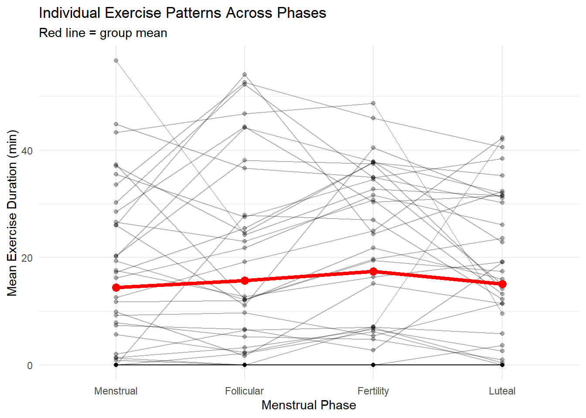
# Don't really see much variation, seems exercise duration does not change dramatically across phasesmerged_data %>%
group_by(phase) %>%
summarise(
n_observations = n(),
mean_duration = mean(total_duration_min, na.rm = TRUE),
sd_duration = sd(total_duration_min, na.rm = TRUE),
mean_calories = mean(total_calories, na.rm = TRUE),
mean_heartrate = mean(avg_heartrate, na.rm = TRUE),
percent_exercised = mean(n_sessions > 0) * 100,
mean_stress = mean(stress_num, na.rm = TRUE),
mean_fatigue = mean(fatigue_num, na.rm = TRUE),
.groups = "drop"
)## # A tibble: 4 × 9
## phase n_observations mean_duration sd_duration mean_calories mean_heartrate
## <fct> <int> <dbl> <dbl> <dbl> <dbl>
## 1 Menstru… 1079 19.0 39.0 64.4 110.
## 2 Follicu… 1386 21.1 43.1 76.8 109.
## 3 Fertili… 1281 22.5 45.3 79.5 110.
## 4 Luteal 1912 18.9 38.3 61.5 111.
## # ℹ 3 more variables: percent_exercised <dbl>, mean_stress <dbl>,
## # mean_fatigue <dbl>IMPORTANT: Should 2024 data be included? Any testing that requires the independence assumption would be violated. - For descriptives, can facet them by interval, or do weighted descriptives, so each individual contributes equally to the analysis
# install.packages("lme4")
# install.packages("lmerTest")
# install.packages("broom.mixed")
# install.packages("ggeffects")
library(lme4)
library(lmerTest)
library(broom.mixed)
library(ggeffects)## Warning: package 'ggeffects' was built under R version 4.5.2# Preparing analysis dataset
analysis_data = merged_data %>%
mutate(study_interval = factor(study_interval))
# Checking data structure
cat("Total observations:", nrow(analysis_data), "\n")## Total observations: 5658cat("Unique participants:", n_distinct(analysis_data$id), "\n")## Unique participants: 42cat("Study intervals:", unique(analysis_data$study_interval), "\n")## Study intervals: 1 2# Model 1: Exercise → cramps
model_cramps = lmer(cramps_num ~ total_duration_min + phase + (1|id),
data = analysis_data,
REML = FALSE)
summary(model_cramps)## Linear mixed model fit by maximum likelihood . t-tests use Satterthwaite's
## method [lmerModLmerTest]
## Formula: cramps_num ~ total_duration_min + phase + (1 | id)
## Data: analysis_data
##
## AIC BIC logLik -2*log(L) df.resid
## 4586.4 4624.6 -2286.2 4572.4 1744
##
## Scaled residuals:
## Min 1Q Median 3Q Max
## -2.6350 -0.5855 -0.1603 0.3530 4.3904
##
## Random effects:
## Groups Name Variance Std.Dev.
## id (Intercept) 0.4656 0.6823
## Residual 0.7425 0.8617
## Number of obs: 1751, groups: id, 42
##
## Fixed effects:
## Estimate Std. Error df t value Pr(>|t|)
## (Intercept) 2.493e+00 1.142e-01 4.705e+01 21.830 <2e-16 ***
## total_duration_min -4.985e-04 9.181e-04 1.734e+03 -0.543 0.587
## phaseFollicular -8.831e-01 6.326e-02 1.737e+03 -13.960 <2e-16 ***
## phaseFertility -7.192e-01 6.430e-02 1.730e+03 -11.185 <2e-16 ***
## phaseLuteal -5.279e-01 5.651e-02 1.736e+03 -9.342 <2e-16 ***
## ---
## Signif. codes: 0 '***' 0.001 '**' 0.01 '*' 0.05 '.' 0.1 ' ' 1
##
## Correlation of Fixed Effects:
## (Intr) ttl_d_ phsFll phsFrt
## ttl_drtn_mn -0.052
## phaseFllclr -0.204 -0.055
## phaseFrtlty -0.199 0.005 0.454
## phaseLuteal -0.230 -0.007 0.502 0.496# Model 2: Exercise → fatigue
model_fatigue = lmer(fatigue_num ~ total_duration_min + phase + (1|id),
data = analysis_data,
REML = FALSE)
summary(model_fatigue)## Linear mixed model fit by maximum likelihood . t-tests use Satterthwaite's
## method [lmerModLmerTest]
## Formula: fatigue_num ~ total_duration_min + phase + (1 | id)
## Data: analysis_data
##
## AIC BIC logLik -2*log(L) df.resid
## 7827.5 7869.2 -3906.7 7813.5 2880
##
## Scaled residuals:
## Min 1Q Median 3Q Max
## -3.5089 -0.6706 -0.0066 0.6295 3.9228
##
## Random effects:
## Groups Name Variance Std.Dev.
## id (Intercept) 0.5668 0.7528
## Residual 0.8300 0.9110
## Number of obs: 2887, groups: id, 42
##
## Fixed effects:
## Estimate Std. Error df t value Pr(>|t|)
## (Intercept) 2.955e+00 1.227e-01 4.895e+01 24.089 <2e-16 ***
## total_duration_min -1.901e-03 8.422e-04 2.875e+03 -2.257 0.0241 *
## phaseFollicular -6.115e-02 5.239e-02 2.857e+03 -1.167 0.2432
## phaseFertility -6.333e-02 5.378e-02 2.856e+03 -1.178 0.2390
## phaseLuteal -7.055e-02 4.909e-02 2.857e+03 -1.437 0.1508
## ---
## Signif. codes: 0 '***' 0.001 '**' 0.01 '*' 0.05 '.' 0.1 ' ' 1
##
## Correlation of Fixed Effects:
## (Intr) ttl_d_ phsFll phsFrt
## ttl_drtn_mn -0.041
## phaseFllclr -0.226 -0.060
## phaseFrtlty -0.218 -0.015 0.543
## phaseLuteal -0.241 -0.005 0.588 0.574# Model 3: Exercise → stress
model_stress = lmer(stress_num ~ total_duration_min + phase + (1|id),
data = analysis_data,
REML = FALSE)
summary(model_stress)## Linear mixed model fit by maximum likelihood . t-tests use Satterthwaite's
## method [lmerModLmerTest]
## Formula: stress_num ~ total_duration_min + phase + (1 | id)
## Data: analysis_data
##
## AIC BIC logLik -2*log(L) df.resid
## 8293.4 8335.2 -4139.7 8279.4 2876
##
## Scaled residuals:
## Min 1Q Median 3Q Max
## -2.7190 -0.7434 -0.0908 0.7007 3.0422
##
## Random effects:
## Groups Name Variance Std.Dev.
## id (Intercept) 0.3266 0.5715
## Residual 0.9899 0.9949
## Number of obs: 2883, groups: id, 42
##
## Fixed effects:
## Estimate Std. Error df t value Pr(>|t|)
## (Intercept) 2.998e+00 9.886e-02 5.696e+01 30.331 <2e-16 ***
## total_duration_min -2.206e-03 9.202e-04 2.882e+03 -2.397 0.0166 *
## phaseFollicular 7.152e-03 5.714e-02 2.860e+03 0.125 0.9004
## phaseFertility 1.440e-02 5.867e-02 2.858e+03 0.245 0.8061
## phaseLuteal -7.964e-02 5.375e-02 2.860e+03 -1.482 0.1385
## ---
## Signif. codes: 0 '***' 0.001 '**' 0.01 '*' 0.05 '.' 0.1 ' ' 1
##
## Correlation of Fixed Effects:
## (Intr) ttl_d_ phsFll phsFrt
## ttl_drtn_mn -0.053
## phaseFllclr -0.312 -0.058
## phaseFrtlty -0.302 -0.013 0.548
## phaseLuteal -0.331 -0.005 0.592 0.578# Model 4: Exercise → mood swings
model_mood = lmer(moodswing_num ~ total_duration_min + phase + (1|id),
data = analysis_data,
REML = FALSE)
summary(model_mood)## Linear mixed model fit by maximum likelihood . t-tests use Satterthwaite's
## method [lmerModLmerTest]
## Formula: moodswing_num ~ total_duration_min + phase + (1 | id)
## Data: analysis_data
##
## AIC BIC logLik -2*log(L) df.resid
## 6184.1 6224.3 -3085.1 6170.1 2281
##
## Scaled residuals:
## Min 1Q Median 3Q Max
## -2.4219 -0.6849 -0.1048 0.5828 4.2400
##
## Random effects:
## Groups Name Variance Std.Dev.
## id (Intercept) 0.4916 0.7012
## Residual 0.8190 0.9050
## Number of obs: 2288, groups: id, 41
##
## Fixed effects:
## Estimate Std. Error df t value Pr(>|t|)
## (Intercept) 2.311e+00 1.191e-01 4.987e+01 19.403 < 2e-16 ***
## total_duration_min -5.892e-04 9.131e-04 2.278e+03 -0.645 0.518848
## phaseFollicular -2.072e-01 5.767e-02 2.265e+03 -3.593 0.000334 ***
## phaseFertility -1.734e-01 5.912e-02 2.264e+03 -2.934 0.003383 **
## phaseLuteal -3.923e-02 5.407e-02 2.265e+03 -0.726 0.468157
## ---
## Signif. codes: 0 '***' 0.001 '**' 0.01 '*' 0.05 '.' 0.1 ' ' 1
##
## Correlation of Fixed Effects:
## (Intr) ttl_d_ phsFll phsFrt
## ttl_drtn_mn -0.050
## phaseFllclr -0.247 -0.053
## phaseFrtlty -0.240 -0.020 0.527
## phaseLuteal -0.261 -0.003 0.561 0.553# Model 5: Exercise → sleep issues
model_sleep = lmer(sleepissue_num ~ total_duration_min + phase + (1|id),
data = analysis_data,
REML = FALSE)
summary(model_sleep)## Linear mixed model fit by maximum likelihood . t-tests use Satterthwaite's
## method [lmerModLmerTest]
## Formula: sleepissue_num ~ total_duration_min + phase + (1 | id)
## Data: analysis_data
##
## AIC BIC logLik -2*log(L) df.resid
## 7205.4 7246.6 -3595.7 7191.4 2660
##
## Scaled residuals:
## Min 1Q Median 3Q Max
## -3.7843 -0.5894 -0.2066 0.6642 4.2065
##
## Random effects:
## Groups Name Variance Std.Dev.
## id (Intercept) 0.6808 0.8251
## Residual 0.8175 0.9042
## Number of obs: 2667, groups: id, 42
##
## Fixed effects:
## Estimate Std. Error df t value Pr(>|t|)
## (Intercept) 2.522e+00 1.342e-01 4.834e+01 18.800 < 2e-16 ***
## total_duration_min -7.420e-04 8.594e-04 2.651e+03 -0.863 0.38799
## phaseFollicular -4.898e-02 5.402e-02 2.637e+03 -0.907 0.36464
## phaseFertility 1.756e-01 5.553e-02 2.636e+03 3.162 0.00159 **
## phaseLuteal 2.222e-02 5.080e-02 2.638e+03 0.438 0.66178
## ---
## Signif. codes: 0 '***' 0.001 '**' 0.01 '*' 0.05 '.' 0.1 ' ' 1
##
## Correlation of Fixed Effects:
## (Intr) ttl_d_ phsFll phsFrt
## ttl_drtn_mn -0.039
## phaseFllclr -0.210 -0.055
## phaseFrtlty -0.204 -0.011 0.544
## phaseLuteal -0.226 -0.008 0.586 0.572# Model 6: Exercise → bloating
model_bloating = lmer(bloating_num ~ total_duration_min + phase + (1|id),
data = analysis_data,
REML = FALSE)
summary(model_bloating)## Linear mixed model fit by maximum likelihood . t-tests use Satterthwaite's
## method [lmerModLmerTest]
## Formula: bloating_num ~ total_duration_min + phase + (1 | id)
## Data: analysis_data
##
## AIC BIC logLik -2*log(L) df.resid
## 5626.1 5666.1 -2806.0 5612.1 2227
##
## Scaled residuals:
## Min 1Q Median 3Q Max
## -2.9140 -0.5243 -0.0863 0.6667 3.8210
##
## Random effects:
## Groups Name Variance Std.Dev.
## id (Intercept) 0.6264 0.7915
## Residual 0.6746 0.8213
## Number of obs: 2234, groups: id, 42
##
## Fixed effects:
## Estimate Std. Error df t value Pr(>|t|)
## (Intercept) 2.569e+00 1.291e-01 4.834e+01 19.899 < 2e-16 ***
## total_duration_min 1.433e-04 8.014e-04 2.213e+03 0.179 0.858
## phaseFollicular -3.824e-01 5.263e-02 2.207e+03 -7.266 5.11e-13 ***
## phaseFertility -2.706e-01 5.375e-02 2.206e+03 -5.034 5.20e-07 ***
## phaseLuteal -2.129e-01 4.905e-02 2.207e+03 -4.341 1.48e-05 ***
## ---
## Signif. codes: 0 '***' 0.001 '**' 0.01 '*' 0.05 '.' 0.1 ' ' 1
##
## Correlation of Fixed Effects:
## (Intr) ttl_d_ phsFll phsFrt
## ttl_drtn_mn -0.035
## phaseFllclr -0.189 -0.070
## phaseFrtlty -0.186 -0.013 0.509
## phaseLuteal -0.206 -0.015 0.546 0.536# Model 7: Exercise → appetite
model_appetite = lmer(appetite_num ~ total_duration_min + phase + (1|id),
data = analysis_data,
REML = FALSE)
summary(model_appetite)## Linear mixed model fit by maximum likelihood . t-tests use Satterthwaite's
## method [lmerModLmerTest]
## Formula: appetite_num ~ total_duration_min + phase + (1 | id)
## Data: analysis_data
##
## AIC BIC logLik -2*log(L) df.resid
## 6302.0 6344.4 -3144.0 6288.0 3167
##
## Scaled residuals:
## Min 1Q Median 3Q Max
## -2.9918 -0.7419 -0.0336 0.5376 4.0591
##
## Random effects:
## Groups Name Variance Std.Dev.
## id (Intercept) 0.1326 0.3642
## Residual 0.4069 0.6378
## Number of obs: 3174, groups: id, 42
##
## Fixed effects:
## Estimate Std. Error df t value Pr(>|t|)
## (Intercept) 2.964e+00 6.212e-02 5.694e+01 47.715 <2e-16 ***
## total_duration_min -5.608e-04 5.656e-04 3.174e+03 -0.991 0.3216
## phaseFollicular -1.624e-02 3.516e-02 3.143e+03 -0.462 0.6442
## phaseFertility 3.886e-02 3.564e-02 3.136e+03 1.091 0.2755
## phaseLuteal 8.416e-02 3.270e-02 3.139e+03 2.574 0.0101 *
## ---
## Signif. codes: 0 '***' 0.001 '**' 0.01 '*' 0.05 '.' 0.1 ' ' 1
##
## Correlation of Fixed Effects:
## (Intr) ttl_d_ phsFll phsFrt
## ttl_drtn_mn -0.055
## phaseFllclr -0.312 -0.055
## phaseFrtlty -0.306 -0.012 0.549
## phaseLuteal -0.334 -0.004 0.592 0.582# Cleaning results:
# Extract coefficients for exercise effect
results_summary = bind_rows(
tidy(model_cramps, effects = "fixed") %>% mutate(outcome = "Cramps"),
tidy(model_fatigue, effects = "fixed") %>% mutate(outcome = "Fatigue"),
tidy(model_stress, effects = "fixed") %>% mutate(outcome = "Stress"),
tidy(model_mood, effects = "fixed") %>% mutate(outcome = "Mood swings"),
tidy(model_sleep, effects = "fixed") %>% mutate(outcome = "Sleep issues"),
tidy(model_bloating, effects = "fixed") %>% mutate(outcome = "Bloating"),
tidy(model_appetite, effects = "fixed") %>% mutate(outcome = "Appetite")
) %>%
filter(term == "total_duration_min") %>%
select(outcome, estimate, std.error, statistic, p.value) %>%
mutate(
significant = ifelse(p.value < 0.05, "Yes", "No"),
p.value = format.pval(p.value, digits = 3, eps = 0.001)
)
print("Summary of exercise effects on symptoms:")## [1] "Summary of exercise effects on symptoms:"print(results_summary)## # A tibble: 7 × 6
## outcome estimate std.error statistic p.value significant
## <chr> <dbl> <dbl> <dbl> <chr> <chr>
## 1 Cramps -0.000499 0.000918 -0.543 0.5872 No
## 2 Fatigue -0.00190 0.000842 -2.26 0.0241 Yes
## 3 Stress -0.00221 0.000920 -2.40 0.0166 Yes
## 4 Mood swings -0.000589 0.000913 -0.645 0.5188 No
## 5 Sleep issues -0.000742 0.000859 -0.863 0.3880 No
## 6 Bloating 0.000143 0.000801 0.179 0.8581 No
## 7 Appetite -0.000561 0.000566 -0.991 0.3216 No# Interaction models
# Cramps
model_cramps_int = lmer(cramps_num ~ total_duration_min * phase + (1|id),
data = analysis_data,
REML = FALSE)
summary(model_cramps_int)## Linear mixed model fit by maximum likelihood . t-tests use Satterthwaite's
## method [lmerModLmerTest]
## Formula: cramps_num ~ total_duration_min * phase + (1 | id)
## Data: analysis_data
##
## AIC BIC logLik -2*log(L) df.resid
## 4587.3 4642.0 -2283.6 4567.3 1741
##
## Scaled residuals:
## Min 1Q Median 3Q Max
## -2.6637 -0.5763 -0.1561 0.3615 4.3968
##
## Random effects:
## Groups Name Variance Std.Dev.
## id (Intercept) 0.4602 0.6784
## Residual 0.7405 0.8605
## Number of obs: 1751, groups: id, 42
##
## Fixed effects:
## Estimate Std. Error df t value
## (Intercept) 2.517e+00 1.142e-01 4.803e+01 22.044
## total_duration_min -3.634e-03 1.758e-03 1.736e+03 -2.067
## phaseFollicular -9.276e-01 6.644e-02 1.736e+03 -13.963
## phaseFertility -7.411e-01 6.737e-02 1.729e+03 -11.001
## phaseLuteal -5.570e-01 5.948e-02 1.734e+03 -9.365
## total_duration_min:phaseFollicular 4.888e-03 2.205e-03 1.724e+03 2.217
## total_duration_min:phaseFertility 2.829e-03 2.744e-03 1.718e+03 1.031
## total_duration_min:phaseLuteal 3.651e-03 2.341e-03 1.721e+03 1.560
## Pr(>|t|)
## (Intercept) <2e-16 ***
## total_duration_min 0.0389 *
## phaseFollicular <2e-16 ***
## phaseFertility <2e-16 ***
## phaseLuteal <2e-16 ***
## total_duration_min:phaseFollicular 0.0268 *
## total_duration_min:phaseFertility 0.3027
## total_duration_min:phaseLuteal 0.1190
## ---
## Signif. codes: 0 '***' 0.001 '**' 0.01 '*' 0.05 '.' 0.1 ' ' 1
##
## Correlation of Fixed Effects:
## (Intr) ttl_d_ phsFll phsFrt phsLtl ttl_drtn_mn:phsFl
## ttl_drtn_mn -0.111
## phaseFllclr -0.219 0.188
## phaseFrtlty -0.211 0.189 0.450
## phaseLuteal -0.243 0.217 0.498 0.490
## ttl_drtn_mn:phsFl 0.089 -0.760 -0.306 -0.153 -0.175
## ttl_drtn_mn:phsFr 0.069 -0.603 -0.119 -0.303 -0.134 0.487
## ttl_drtn_:L 0.081 -0.709 -0.144 -0.139 -0.316 0.564
## ttl_drtn_mn:phsFr
## ttl_drtn_mn
## phaseFllclr
## phaseFrtlty
## phaseLuteal
## ttl_drtn_mn:phsFl
## ttl_drtn_mn:phsFr
## ttl_drtn_:L 0.453# Testing if interaction is significant
anova(model_cramps, model_cramps_int)## Data: analysis_data
## Models:
## model_cramps: cramps_num ~ total_duration_min + phase + (1 | id)
## model_cramps_int: cramps_num ~ total_duration_min * phase + (1 | id)
## npar AIC BIC logLik -2*log(L) Chisq Df Pr(>Chisq)
## model_cramps 7 4586.4 4624.6 -2286.2 4572.4
## model_cramps_int 10 4587.3 4642.0 -2283.7 4567.3 5.0687 3 0.1668# Fatigue
model_fatigue_int = lmer(fatigue_num ~ total_duration_min * phase + (1|id),
data = analysis_data,
REML = FALSE)
anova(model_fatigue, model_fatigue_int)## Data: analysis_data
## Models:
## model_fatigue: fatigue_num ~ total_duration_min + phase + (1 | id)
## model_fatigue_int: fatigue_num ~ total_duration_min * phase + (1 | id)
## npar AIC BIC logLik -2*log(L) Chisq Df Pr(>Chisq)
## model_fatigue 7 7827.5 7869.2 -3906.7 7813.5
## model_fatigue_int 10 7830.0 7889.6 -3905.0 7810.0 3.5026 3 0.3204# Stress
model_stress_int = lmer(stress_num ~ total_duration_min * phase + (1|id),
data = analysis_data,
REML = FALSE)
anova(model_stress, model_stress_int)## Data: analysis_data
## Models:
## model_stress: stress_num ~ total_duration_min + phase + (1 | id)
## model_stress_int: stress_num ~ total_duration_min * phase + (1 | id)
## npar AIC BIC logLik -2*log(L) Chisq Df Pr(>Chisq)
## model_stress 7 8293.4 8335.2 -4139.7 8279.4
## model_stress_int 10 8298.9 8358.6 -4139.5 8278.9 0.4608 3 0.9274# Moodswing
model_mood_int = lmer(moodswing_num ~ total_duration_min * phase + (1|id),
data = analysis_data,
REML = FALSE)
anova(model_mood, model_mood_int)## Data: analysis_data
## Models:
## model_mood: moodswing_num ~ total_duration_min + phase + (1 | id)
## model_mood_int: moodswing_num ~ total_duration_min * phase + (1 | id)
## npar AIC BIC logLik -2*log(L) Chisq Df Pr(>Chisq)
## model_mood 7 6184.1 6224.3 -3085.1 6170.1
## model_mood_int 10 6189.0 6246.3 -3084.5 6169.0 1.1674 3 0.7608# Sleepissue
model_sleep_int = lmer(sleepissue_num ~ total_duration_min * phase + (1|id),
data = analysis_data,
REML = FALSE)
anova(model_sleep, model_sleep_int)## Data: analysis_data
## Models:
## model_sleep: sleepissue_num ~ total_duration_min + phase + (1 | id)
## model_sleep_int: sleepissue_num ~ total_duration_min * phase + (1 | id)
## npar AIC BIC logLik -2*log(L) Chisq Df Pr(>Chisq)
## model_sleep 7 7205.4 7246.6 -3595.7 7191.4
## model_sleep_int 10 7210.8 7269.7 -3595.4 7190.8 0.6565 3 0.8834# bloating
model_bloating_int = lmer(bloating_num ~ total_duration_min * phase + (1|id),
data = analysis_data,
REML = FALSE)
anova(model_bloating, model_bloating_int)## Data: analysis_data
## Models:
## model_bloating: bloating_num ~ total_duration_min + phase + (1 | id)
## model_bloating_int: bloating_num ~ total_duration_min * phase + (1 | id)
## npar AIC BIC logLik -2*log(L) Chisq Df Pr(>Chisq)
## model_bloating 7 5626.1 5666.1 -2806.1 5612.1
## model_bloating_int 10 5630.4 5687.5 -2805.2 5610.4 1.6852 3 0.6402# appetite
model_appetite_int = lmer(appetite_num ~ total_duration_min * phase + (1|id),
data = analysis_data,
REML = FALSE)
anova(model_appetite, model_appetite_int)## Data: analysis_data
## Models:
## model_appetite: appetite_num ~ total_duration_min + phase + (1 | id)
## model_appetite_int: appetite_num ~ total_duration_min * phase + (1 | id)
## npar AIC BIC logLik -2*log(L) Chisq Df Pr(>Chisq)
## model_appetite 7 6302.0 6344.4 -3144.0 6288.0
## model_appetite_int 10 6306.5 6367.2 -3143.3 6286.5 1.4539 3 0.693==================================================================================================================
This analysis combines exercise tracking data with hormone and self-reported symptom data to examine relationships between physical activity and menstrual cycle phases. The exercise data was first cleaned by removing duplicate entries and selecting relevant variables including exercise duration, active time, and heart rate. Individual exercise sessions were then aggregated to the daily level, with duration variables converted from milliseconds to minutes. Daily summaries include total exercise duration, total active minutes, average heart rate, and number of exercise sessions per day. The hormone and self-reported symptom data was cleaned by converting all Likert scale responses (ranging from “Very Low/Little” to “Very High”) to numeric values from 1 to 5 for quantitative analysis. Menstrual cycle phases were ordered chronologically (Menstrual, Follicular, Fertility, Luteal) as an ordered factor variable to ensure proper sequencing during analyses.
``` r
# Read data
exercise = read_csv("./data/exercise.csv")
hormones = read_csv("./data/hormones_and_selfreport.csv")
# Clean and de-duplicate exercise data
exercise_clean = exercise %>%
distinct() %>%
select(id, study_interval, start_day_in_study, activityname, duration, activeduration, averageheartrate)
# Aggregate to daily level
exercise_daily = exercise_clean %>%
group_by(id, study_interval, start_day_in_study) %>%
summarise(
total_duration_min = sum(duration, na.rm = TRUE) / 60000,
total_active_min = sum(activeduration, na.rm = TRUE) / 60000,
avg_heartrate = mean(averageheartrate, na.rm = TRUE),
n_sessions = n(),
.groups = "drop"
) %>%
rename(day_in_study = start_day_in_study)
# Convert Likert scales to numeric
likert_to_num = c("Very Low/Little" = 1, "Low" = 2, "Moderate" = 3,
"High" = 4, "Very High" = 5)
hormones_clean = hormones %>%
mutate(
# Convert all symptoms to numeric
headaches_num = recode(headaches, !!!likert_to_num),
cramps_num = recode(cramps, !!!likert_to_num),
sorebreasts_num = recode(sorebreasts, !!!likert_to_num),
fatigue_num = recode(fatigue, !!!likert_to_num),
sleepissue_num = recode(sleepissue, !!!likert_to_num),
moodswing_num = recode(moodswing, !!!likert_to_num),
stress_num = recode(stress, !!!likert_to_num),
foodcravings_num = recode(foodcravings, !!!likert_to_num),
indigestion_num = recode(indigestion, !!!likert_to_num),
bloating_num = recode(bloating, !!!likert_to_num),
appetite_num = recode(appetite, !!!likert_to_num),
# Order phase factor
phase = factor(phase,
levels = c("Menstrual", "Follicular", "Fertility", "Luteal"))
)
# Merge datasets
merged_data = hormones_clean %>%
left_join(exercise_daily, by = c("id", "study_interval", "day_in_study")) %>%
mutate(
# Replace NA with 0 for days without exercise
total_duration_min = replace_na(total_duration_min, 0),
total_active_min = replace_na(total_active_min, 0),
n_sessions = replace_na(n_sessions, 0),
# Did they exercise today?
exercised_today = ifelse(n_sessions > 0, 1, 0)) %>%
# Remove individuals with no phase
filter(!is.na(phase))